Peka is one of Croatia’s most soulful and unforgettable dishes. Slow-cooked under a heavy iron bell covered with hot embers, peka
brings together tender meat or fresh seafood, potatoes, herbs, olive oil, and garlic, all gently roasted until the flavors melt into
perfection. The magic lies in patience — hours of slow cooking create deep, rustic aromas and fall-apart textures. Often prepared for
family gatherings and special occasions, peka isn’t just a meal, it’s an experience — a timeless taste of Dalmatian tradition that
invites visitors to slow down and savor Croatia the old-fashioned way.
Crni rižot
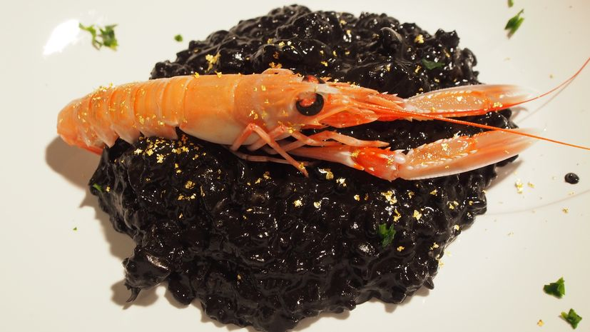
Crni rižot is one of Croatia’s most striking and flavorful coastal dishes. Made with cuttlefish or squid and enriched with their
natural black ink, this creamy risotto carries deep, briny notes of the Adriatic Sea. Slow-cooked with garlic, olive oil, wine, and
fresh herbs, it delivers a bold yet elegant taste that feels both rustic and refined. Loved along the Dalmatian coast, crni rižot is
a true culinary adventure — a dish that surprises the eye, comforts the soul, and lets travelers taste the sea in its most authentic
form.
Istrian fuži with truffles
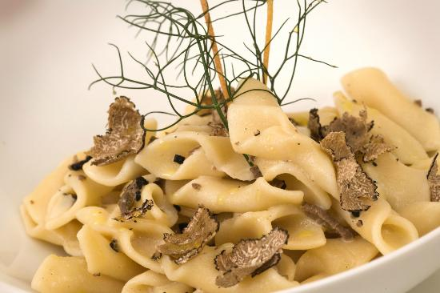
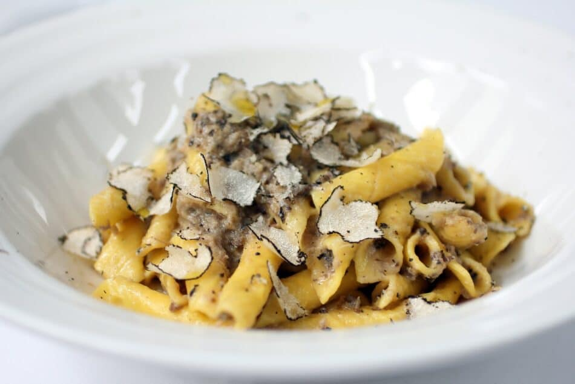
Istrian fuži with truffles is pure Istrian comfort with a touch of luxury. These handmade, diamond-shaped pasta pieces are gently
folded to catch every drop of rich, buttery truffle sauce. Paired with freshly grated black or white Istrian truffles — the region’s
prized treasure — the dish delivers deep, earthy flavors that feel timeless and indulgent. Simple, honest ingredients meet
centuries-old tradition, making fuži with truffles a must-try for anyone wanting to taste Istria’s soul, where forest aromas and slow
Mediterranean living come together on one unforgettable plate.
Kremšnita
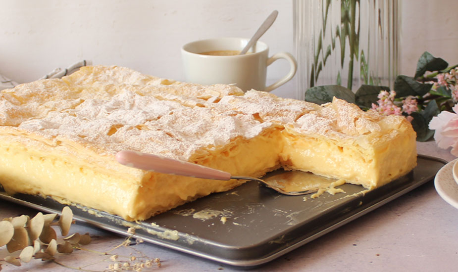
Kremšnita is a beloved classic that feels like a sweet pause in time. With its crisp, golden layers of pastry and a generous
filling of silky vanilla cream, this iconic dessert from the Lake Bled region is all about balance — light yet indulgent, simple yet
unforgettable. Often enjoyed with a coffee and a lakeside view, kremšnita carries the warmth of tradition and the joy of slow moments.
One bite is enough to understand why this dessert has become a symbol of comfort, nostalgia, and pure Central European charm.
Fritule
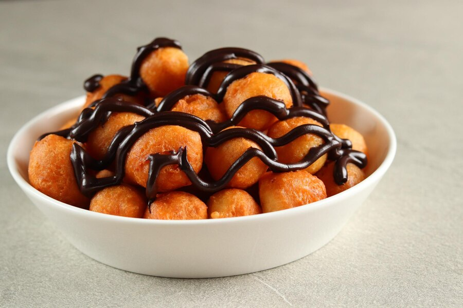
Fritule are little bites of pure Croatian joy. These tiny, fluffy dough balls, often infused with a hint of citrus zest or a splash of
rum, are traditionally dusted with powdered sugar and sometimes studded with raisins. Crispy on the outside, soft and pillowy on the
inside, fritule capture the warmth of festive gatherings, coastal traditions, and homemade love. Perfect for sharing (or sneaking a
few on your own), they are a sweet, nostalgic taste of Croatia’s culinary heart.
Rožata
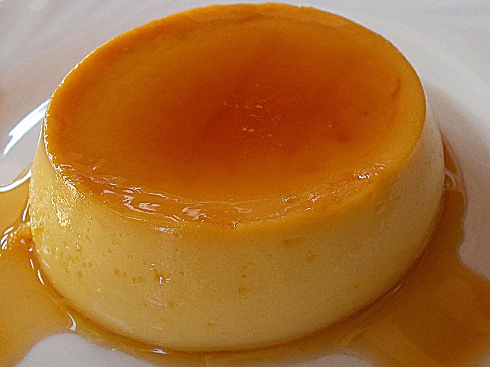
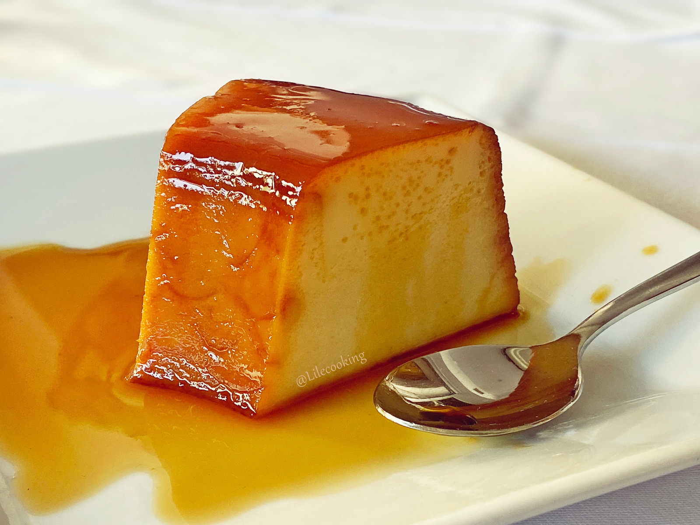
Rožata is a dessert that whispers the sun-soaked charm of Croatia’s Dalmatian coast. This silky, caramel-topped custard, infused with
a delicate hint of rose liqueur, is both elegant and comforting. Each spoonful melts smoothly, balancing sweetness with a fragrant
floral note, making it a true taste of tradition. Served in coastal tavernas or at festive tables, Rožata is a sweet escape into
Croatia’s culinary heritage, perfect for anyone seeking a little indulgence with a story.
 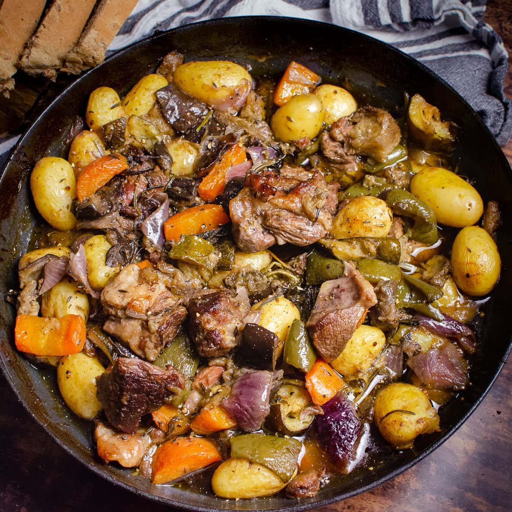
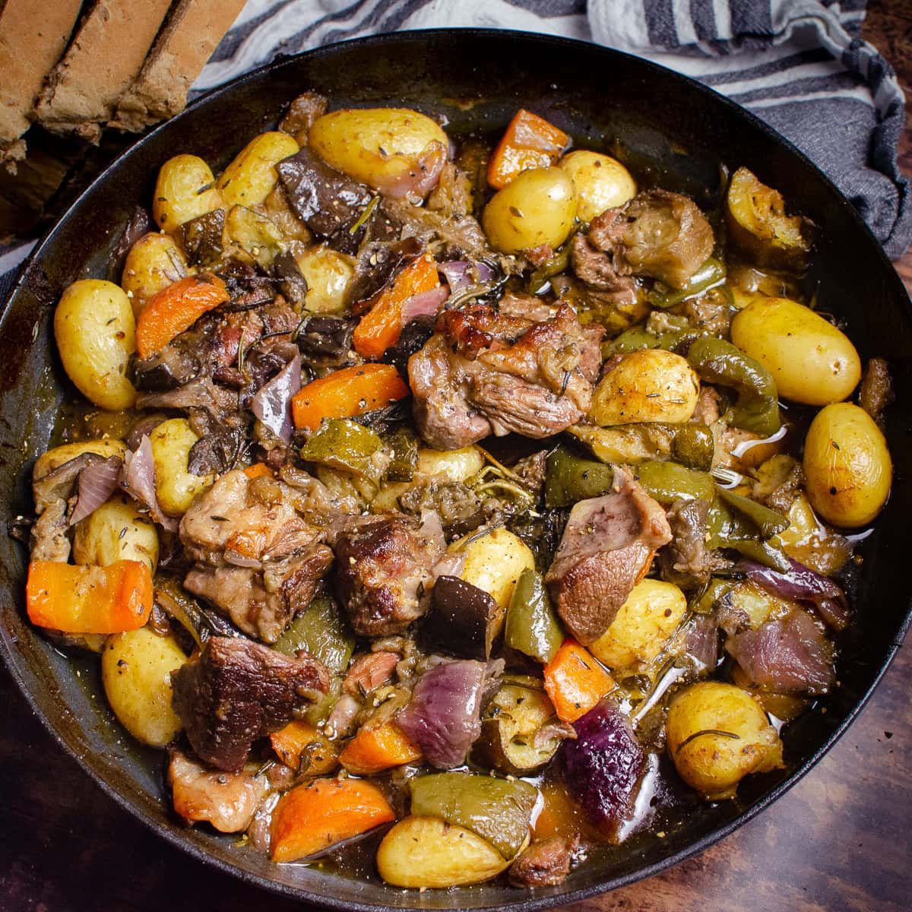


 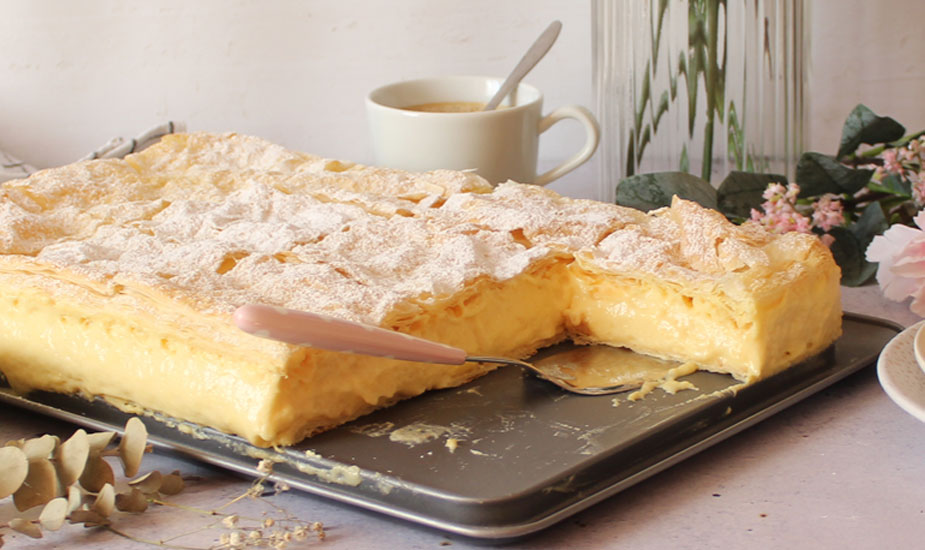
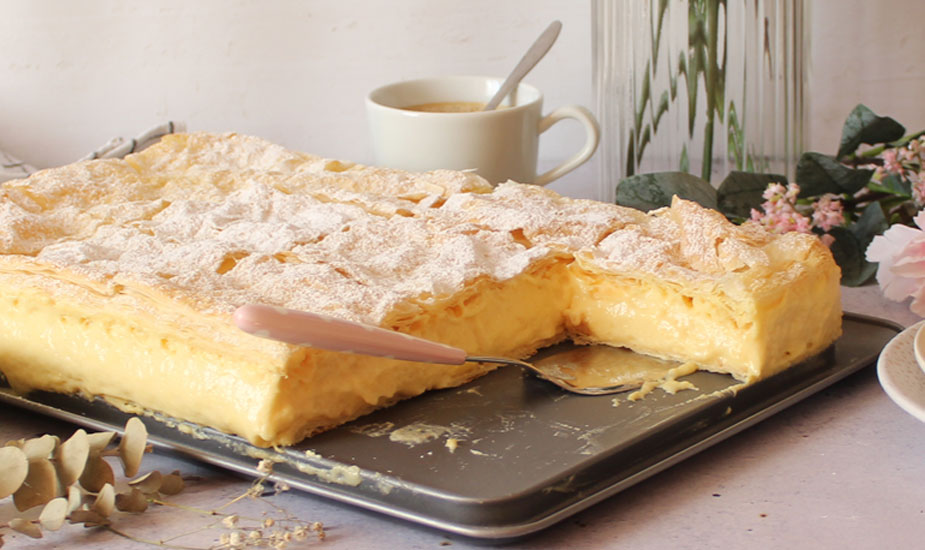
 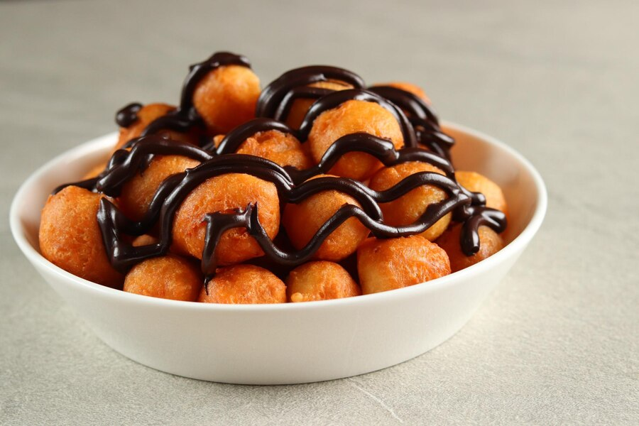
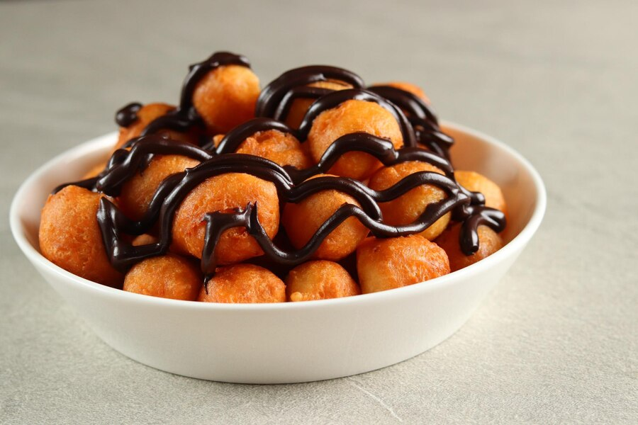